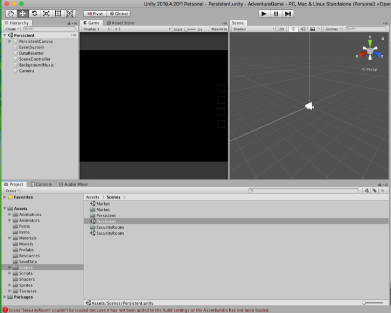
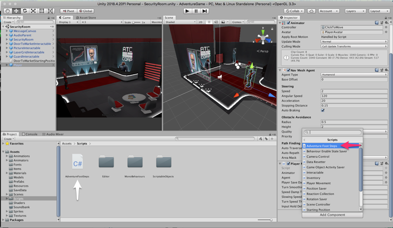
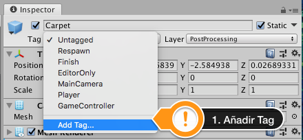

TALLER SONORIZACIÓN ADVENTURE GAME Clase: Sonorización de videojuegos Ricardo A Moreno |
Este proyecto de videojuego es de tipo (Point and click) significa que toda su interacción se realiza a través el mouse y requiere hacer click en distintas zonas para moverse e interactuar con los objetos. involucra dos escenas a través de las cuales se deben recolectar algunos objetos para guardarlos en un inventario. |
Para sonorizar el videojuego primero crearemos un nuevo proyecto 3D en Unity y realizamos la importación del archivo adventureunity.package en la carpeta de assets. Verificamos que todos los elementos estén seleccionados (All) y damos click en import. |
Una vez que se han importado todos los elementos, vamos a la carpeta de escenas donde encontraremos las escenas “Market”, “Security Room” y “Persistent”, esta ultima es la escena principal que se encarga de manejar y cambiar entre las otras dos. Por lo tanto damos doble click para que cargue todos sus elementos en la jerarquía y luego ejecutamos dando play.  Si al ejecutar aparece el mensaje de error "Scene 'SecurityRoom' couldn't be loaded because it has not been added to the build settings or the AssetBundle has not been loaded”. Debemos primero añadir las escenas en el menú build settings de Unity. Luego de arrastrar las escenas “market" y "security Room" podemos cerrar la ventana de Buid Settings y volver a ejecutar la escena “persistent”, ahora se deberá ejecutar sin errores como se ve en la siguiente imagen. Para tener un mejor rendimiento y liberar recursos del equipo podemos reducir el detalle gráfico de la escena en el menú Project Settings, se desplegara una ventana donde tenemos los diferentes ajustes de calidad de la escena, podemos bajarlo a Low o Very Low. Verifique que la opción quede seleccionada y marcada con la casilla de verificación en verde. |
Sonorizando el proyecto: Crearemos un Folder llamado “Soundbank” en la carpeta de assets para colocar todos los archivos de audio que usara el proyecto, y dentro de este podemos crear subfolder para cada categoría, principalmente Efectos (FX), Ambientes (BG), Musica (MX) y Dialogos (DX) |
Efectos Sonoros del proyecto: Footsteps: Para añadir los pasos al personaje usaremos una técnica diferente a la trabajada anteriormente en clase, para este caso usaremos la animación del personaje cuando camina y definiremos dos eventos que funcionaran como triggers con cada paso del personaje. Para realizar dicha configuración nos dirigimos a la siguiente ruta: Assets/Animations/Player/Walk En el inspector se mostrara la animación de caminado. .png) Luego en el inspector de la animación buscamos la sección de Events y desplegamos sus opciones, aparecerá una especie de linea de tiempo que estará sincronizada con el cursor de la animación.
 Luego procedemos a copiar el script AdventureFootSteps en la carpeta de scripts del proyecto. primero debemos ir a la carpeta de escenas y montar la escena security Room, luego en la jerarquía seleccionamos el objeto player que corresponde al personaje, y en el inspector añadimos un componente de tipo scripts y seleccionamos el script “AdventureFootSteps”.  El script contiene la lógica para seleccionar aleatoriamente un audioclip del array según la superficie que pisa el personaje, cada vez que se genera un evento en la animación que se configuro anteriormente. Para que el script de pasos pueda reproducir los diferentes audio clips de pasos se deberá crear un componente de tipo audiosource y asignarlo en el campo FootAudioSource. Previamente hayamos editado las diferentes muestras de pasos, amenos 4 por superficie, copiamos los audio files en la carpeta “soundbank / footsteps y luego los arrastramos al respectivo array en el script. Como ejemplo hemos asignado 4 versiones de paso al array Default Steps, recordemos que dicho array se ejecutara por defecto para cualquier superficie que no tenga etiqueta, serán los pasos generales del personaje. Para realizar la comprobación volvemos a la carpeta de Scenes y cargamos la escena Persistent, damos play y luego click sobre la superficie para que el personaje se mueva y la animacion accione los pasos. Ahora realizaremos la configuración para cambiar el sonido de pasos cuando el personaje este sobre la superficie de la alfombra roja. Para esto prepararemos 4 muestras de paso que copiaremos en la carpteta del banco sonoro y luego asignaremos al array “Carpeta Steps” Luego procedemos a seleccionar el objeto Carpet correspondiente a la alfombra roja que se ve en la escena, siguiendo la ruta que se observa en la jerarquía. En el inspector del objeto Carpet agregamos un nuevo componente de tipo Physics / Box Collider, este permitirá detectar la colisión del personaje con la superficie, una vez agregado marcamos la opción is Trigger. Por ultimo agregamos a la alfombra, una etiqueta con el nombre “carpet”, esta etiqueta será el elemento que detecta el script para generar el cambio del array de pasos a carpet.  Para que el personaje sea detectado por los triggers y genere el cambio de pasos debemos agregar los componentes Rigibody y Capsule Collider al player y los configurarlos como se observa en la imagen: Realizamos la verificación, guardando los cambios en la escena actual y volviendo a la escena persistent, ejecutamos la escena y movemos el personaje, debe generarse el cambio en la sonoridad de los pasos al caminar sobre las diferentes superficies. |
Para agregar los pasos en la escena “Market", realizamos el mismo proceso que en la escena "Security Room”, teniendo en cuenta que en dicha escena habrán 3 tipos de superficies: Para el caso de la superficie 3 que esta compuesta por 3 secciones podemos adicionar objetos vacíos como hijos del objeto principal llamado “GroundTiles”, luego los renombrados como sección1, sección2 y sección3. En el inspector de cada una de las secciones creadas, añadimos un componente de tipo box collider y lo ajustamos a las dimensiones de la superficie que se desea cubrir. Luego creamos y añadimos una nueva etiqueta a cada sección, para este ejemplo será “tile” Agregamos las muestras de pasos en el array “TileSteps" y comprobamos su funcionamiento lanzando la escena “Persistent”. |
AUDIO-MANAGER En cada una de las escenas del proyecto hay una serie de objetos que reaccionan a las interacciones del personaje principal, se identifican en la jerarquía de la escena porque están nombrados con la terminación Interactable. Cada uno de estos objetos puede tener una o varias reacciones que responden con animaciones, textos, audios, etc. Para el caso de los audios se identificaran como Audio Reaction. Por ejemplo si seleccionamos el objeto “DoorToMarketInteractable” y lo desplegamos, veremos que tiene un objeto hijo denominado “DefaultReaction”, luego, en el inspector de dicho objeto veremos que existen dos reacciones: FX En la casilla audio Clip del Audio Reaction, agregamos el efecto sonoro correspondiente a la puerta, por ejemplo: Este audioclip se reproducirá a través del audio source asignado, por defecto FX(audio source), dicho audiosource se encuentra como un componente del objeto Audio Parent que es el encargado de recibir todos los audioclips de tipo FX(efecto), VO(dialogo) y Ambient(ambiente) de la escena. Ambient Para los sonidos de ambiente se recomienda usar capas, para el caso del ambiente de la escena Security Room diseñamos un loop no inferior a 30 seg con cuatro capas correspondientes a diferentes Room tones + una capa de sonidos de maquinas, equipos de computo y telecomunicaciones. Nota: se debe evitar los fade in y fade out y verificar que el loop no presenta discontinuidades al repetirse. Los ambientes se exportan en estéreo para conservar la espacialidad. Para asignar el sonido ambiente usamos el audiosource Ambient contenido en el objeto AudioParent de cada escena. Verificamos que el parámetro AudioBlend este en 2D y que estén activas las opciones Play On Awake y Loop, para que el audioclip inicie con el lanzamiento de la escena. MX Para asignar la música al juego podemos agregar un audiosource nuevo en cada escena, sin embargo en la escena Persistent esta el objeto BackgroundMusic, este contiene el audio source para reproducir la música sin que genere interrupciones al cambiar de escena. Usamos un loop de al menos 1 minuto para que no resulte monótono y lo configuramos con los parámetros spatialblend 2D, playOnAwake y modo Loop. |
VO FX. (Escena Market) En algunos objetos interactivos las reacciones combinan texto, dialogo y efectos, como por ejemplo en la maquina de vending en la escena de mercado. En una de las maquinas hay una moneda que deberá coleccionar el personaje, al hacer click sobre la moneda el personaje reaccionara con un subtitulo y un dialogo de sorpresa al encontrar la moneda, seguido de un efecto sonoro para confirmar que la moneda fue guardada en el inventario. Para asignar los audio clips, seleccionamos el objeto ConInteractable y desplegamos las AudioReaction en el inspector, podemos observar que hay tres, una para el dialogo VO, otra para el efecto FX, y otra adicional para el texto que aparecerá como un subtitulo. Observe que la reacción del efecto posee un Delay de 1 segundo para evitar que el efecto se sobreponga al dialogo, podemos ajustar dicho valor de acuerdo a la duración de los audio clips. |
CONFIGURACIÓN DEL AUDIO MIXER Estando ubicados en la carpeta Soundbank del proyecto damos clic derecho / crear / audio mixer. Una vez creado podemos darle un nombre, para el ejemplo lo nombraremos MasterMixer, el audio mixer funciona de forma global, lo que quiere decir que no es necesario crear uno para cada escena. Luego damos doble clic sobre el mixer para desplegar la vista, y creamos 4 canales para efectos(FX), dialogo(DX), ambientes(BG) y música (MX). Verifique que este seleccionado el canal master antes de dar en el + de grupo para crear los demás canales, de esta forma quedaran como hijos del canal master. Luego de configurar el mixer debemos hacer el ruteo de todos los audiosources presentes en las escenas de “Market”, “SecurityRoom" y “Persistent”, hacia los canales respectivos del mixer. En la siguiente imagen se muestra el ruteo del audiosource FX que esta en el objeto AudioParent la escena Market, hacia el canal FX en el mixer. Antes de hacer los ruteos debemos verificar que la escena este detenida para que se guarden los cambios, luego en la casilla Output del audio source seleccionamos el canal del mixer hacia el cual queremos enviar la señal. Luego ejecutamos la escena y verificamos que se este recibiendo señal en el mixer.  |